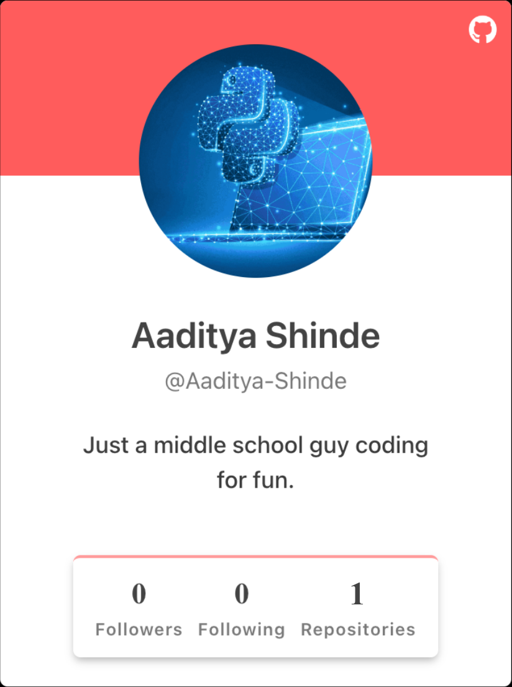

 I've always loved to create. I started out building mechanical contraptions out of household items: a coin-box made of cardboard, a rubber band launcher from some scrap wood, or maybe a rocket powered by vinegar and baking soda. When I was about seven years old, I discovered programming. It was the natural progression from mechanics. To me, coming up with a solution was more fun than actually implementing it. Because of this, many of the projects I thought of making from cardboard never became a reality. With code, I could quickly create a prototype to test my theories. Programming required me to break down problems and logically work out each step. If I tried to rush to the solution, it would only lead to hours of debugging. Instead, if I spent time first thinking about a solution, I would complete the problem much faster. For example, I once created a program to solve Wordle puzzles. I tried to rush into coding, but got stuck. I went back to the drawing board and worked out how the program should work. After that, coding it was easy, maybe 2 or 3 hours. The result was code that could solve a puzzle with an average of 3.66 guesses much faster than I could. I believe that coding isn’t very difficult. The real challenge is developing the intuition to solve problems. It was very satisfying to see a project come together after hours of planning, coding, and debugging. This website you are looking at took days to complete, but it was so rewarding when it was over. I recently started USACO, a programming contest for high schoolers(I'm currently in middle school). I passed the Bronze contest this February.
When I was learning these topics, all the classes taught the same things, but none of them were taught in a way that stuck to me. They all just listed out the concepts and hoped that kids memorized them. I believe for kids to truly understand something, they need to be taught the intuition behind the concept. If other classes didn’t provide these services, I had to start my own class. We created Baking Py, a nonprofit organization. We aim to structure our classes in a way each topic simply merges into the next. That way, it is much more likely that students will be able to remember the topics and get an intuition for how it works. Even within the same topics, our exercises flow easily from one to another eventually reaching a realization of a new topic. Many times, students don't even notice that they've learned something new because it seems so intuitive. This is what we try to teach, not memorization of topics, but the intuition behind them. Check out our website here.